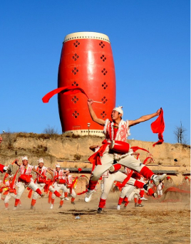
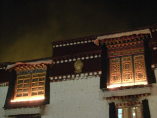
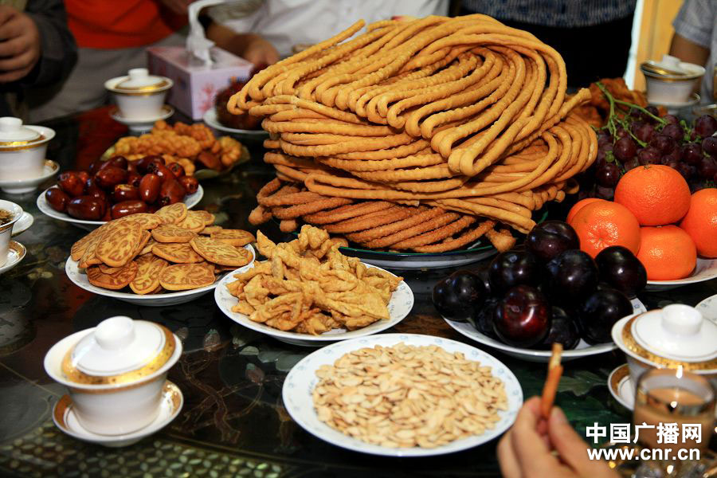
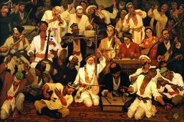
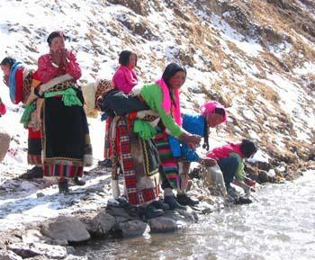

西北少数民族

西北的文化习俗

陕西安塞腰鼓
腰鼓为民间舞蹈中常见的活动，古往今来一直不绝于世。至今，陕西民间，特别是陕北一带，青少年男女一有空暇，他们腰间斜跨带子，系上腰鼓，两手各执小木棍，于前后左右击打，并有锣、钗相敲配合，“嘣一嚓嚓”之声清脆响亮，格外入耳悦目。
 甘肃陇剧
甘肃陇剧
陇剧原名陇东道情，是甘肃省独有传统戏曲艺术。起源于汉代的道情说唱，唐宋时期由宫廷走向民间。扎根于陇东的渔鼓道情，逐渐吸收了当地民间音乐营养，增加二股弦等乐器，衍化为皮影唱腔音乐。1958年搬上舞台，1959年正式命名为陇剧。

青海燃灯节
燃灯节又称“五公节”，藏语叫“葛登阿曲”，是西藏、青海、四川、甘肃等省、区藏族人民的宗教节日，每年藏年十月二十五日举行，为期一天。燃灯节是为了纪念佛教改革家，格鲁派创始人，宗喀巴大师的逝世而举行的活动。这天凡属该教派的各大小寺庙、各村寨牧民，都要在寺院内外的神坛上，家中的经堂里，点酥油灯，昼夜不灭。

宁夏开斋节
伊斯兰教历每年九月，称为斋月，斋月期间，穆斯林在日出之前都要吃好封斋饭，日出之后整个白天，不吃不唱，称为封斋。开斋节是回教的一个非常隆重的节日。

新疆十二木卡姆
木卡姆音乐现象分布在中亚、西亚、南亚、北非19个国家和地区，新疆处于这些国家和地区的最东端。得益于横贯欧亚的古代陆上交通大动脉——“丝绸之路”，维吾尔木卡姆作为东、西方乐舞文化交流的结晶，记录和印证了不同人群乐舞文化之间相互传播、交融的历史。

沐浴节
“沐浴节”，在西藏至少有七八百年的历史，藏语称为“嘎玛日吉”（弃山星，即金星）。据藏文历书记载：弃山星半年昼出，半年夜出。在拉萨地区藏历7月至8月初肉眼能看见此星，传说经此星光照射之水均成药水，所以弃山星出现之时，洗澡活动便进入高潮。